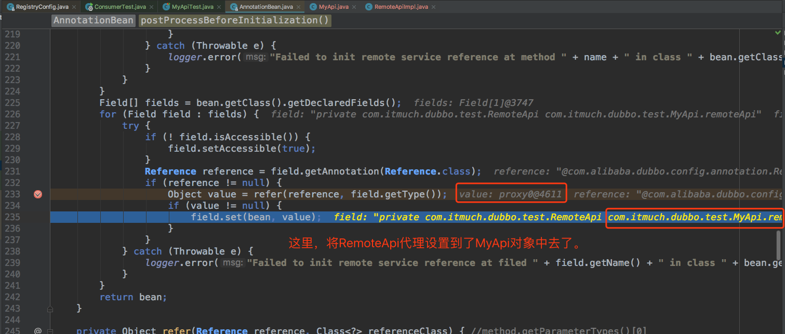

<!DOCTYPE HTML>
<html lang="zh-CN">
<head><meta name="generator" content="Hexo 3.8.0">
    <!--Setting-->
    <meta charset="UTF-8">
    <meta name="viewport" content="width=device-width, user-scalable=no, initial-scale=1.0, maximum-scale=1.0, minimum-scale=1.0">
    <meta http-equiv="X-UA-Compatible" content="IE=Edge,chrome=1">
    <meta http-equiv="Cache-Control" content="no-siteapp">
    <meta http-equiv="Cache-Control" content="no-transform">
    <meta http-equiv="pragma" content="no-cache">
    <meta http-equiv="Cache-Control" content="no-cache, must-revalidate">
    <meta http-equiv="expires" content="Mon Apr 06 2020 02:12:40 GMT+0800 (CST)">
    <meta name="renderer" content="webkit|ie-comp|ie-stand">
    <meta name="apple-mobile-web-app-capable" content="周立的博客 - 关注Spring Cloud、Docker">
    <meta name="apple-mobile-web-app-status-bar-style" content="black">
    <meta name="format-detection" content="telephone=no,email=no,adress=no">
    <meta name="browsermode" content="application">
    <meta name="screen-orientation" content="portrait">
    <meta name="theme-version" content="1.2.3">
    <meta name="root" content="/">
    
    <!--SEO-->

    <meta name="keywords" content="Spring Boot,Dubbo">


    <meta name="description" content="本文是对Spring Boot、Dubbo项目进行Mock测试的总结与踩坑实录。
搜索了一圈，居然没发现类似的文章，莫非用Dubbo的朋友们都不Mock测试，或者有其他的办法测试吗？
简单总结了一下，希望对大家能有一定参考意义。如果有更好的测试方法，请联系我的邮箱eacdy0000@126.c...">


<meta name="robots" content="all">
<meta name="google" content="all">
<meta name="googlebot" content="all">
<meta name="verify" content="all">
    <!--Title-->


<title>Spring Boot、Dubbo项目Mock测试踩坑与总结 | 周立的博客 - 关注Spring Cloud、Docker</title>


    <link rel="alternate" href="../../atom.html" title="周立的博客 - 关注Spring Cloud、Docker" type="application/atom+xml">


    

    


<link rel="stylesheet" href="../../static/css/bootstrap.min-271a649e0635d6fa1b.css">
<link rel="stylesheet" href="../../static/css/font-awesome.min-ac2bebcf7fb5b26.css">
<link rel="stylesheet" href="../../static/css/style-6f3c140f6eee20e6591da00ec0.css">


    


    <script>
        var _hmt = _hmt || [];
        (function() {
            var hm = document.createElement("script");
            hm.src = "https://hm.baidu.com/hm.js?13766878cde148282622871dd245a973";
            var s = document.getElementsByTagName("script")[0];
            s.parentNode.insertBefore(hm, s);
        })();
    </script>


    

</head>

</html>
<!--[if lte IE 8]>
<style>
    html{ font-size: 1em }
</style>
<![endif]-->
<!--[if lte IE 9]>
<div style="ie">你使用的浏览器版本过低，为了你更好的阅读体验，请更新浏览器的版本或者使用其他现代浏览器，比如Chrome、Firefox、Safari等。</div>
<![endif]-->

<body>
    
    <nav class="main-navigation">
    <div class="container">
        <div class="row clearfix">
            <div class="col-md-12 column">
                <nav class="navbar navbar-default" style="background-color:#fff;border:0;margin-bottom:0" role="navigation">
                    <div class="navbar-header">
                        <button type="button" class="navbar-toggle" data-toggle="collapse" data-target="#navbar-collapse-1">
                            <span class="sr-only">切</span>
                            <span class="icon-bar"></span>
                            <span class="icon-bar"></span>
                            <span class="icon-bar"></span>
                        </button>
                        <a class="logo" href="../../index.html">
                            周立的博客
                        </a>
                    </div>

                    <div class="collapse navbar-collapse" style="border:0;" id="navbar-collapse-1">
                        <ul class="nav navbar-nav">
                            
                                
                                    <li>
                                        <a href="../../about.html" target="_blank">
                                            <i class="fa fa-user"></i>
                                            关于我
                                        </a>
                                    </li>
                                
                            
                                
                                    <li>
                                        <a href="../../archives.html" target="_blank">
                                            <i class="fa fa-archive"></i>
                                            归档
                                        </a>
                                    </li>
                                
                            
                                
                                    <li class="dropdown">
                                        <a href="#" class="dropdown-toggle" data-toggle="dropdown" data-hover="dropdown">
                                            <i class="fa fa-fire"></i>
                                            系列课程
                                            <strong class="caret"></strong>
                                        </a>
                                        <ul class="dropdown-menu">
                                            
                                                <li>
                                                    <a href="../../docker/00-docker-lession-index.html" target="_blank">
                                                        <i class="fa "></i>
                                                        Docker系列教程
                                                    </a>
                                                </li>
                                            
                                                <li>
                                                    <a href="../../spring-cloud/spring-cloud-index.html" target="_blank">
                                                        <i class="fa "></i>
                                                        Spring Cloud系列教程
                                                    </a>
                                                </li>
                                            
                                                <li>
                                                    <a href="../../spring-boot/spring-boot-index.html" target="_blank">
                                                        <i class="fa "></i>
                                                        Spring Boot系列教程
                                                    </a>
                                                </li>
                                            
                                        </ul>
                                    </li>
                                
                            
                                
                                    <li class="dropdown">
                                        <a href="#" class="dropdown-toggle" data-toggle="dropdown" data-hover="dropdown">
                                            <i class="fa fa-book"></i>
                                            开源书
                                            <strong class="caret"></strong>
                                        </a>
                                        <ul class="dropdown-menu">
                                            
                                                <li>
                                                    <a href="../../books/rocketmq.html" target="_blank">
                                                        <i class="fa fa-rocket"></i>
                                                        RocketMQ开发者指南
                                                    </a>
                                                </li>
                                            
                                                <li>
                                                    <a href="../../books/skywalking.html" target="_blank">
                                                        <i class="fa fa-skyatlas"></i>
                                                        Skywalking 6.2.0中文文档
                                                    </a>
                                                </li>
                                            
                                        </ul>
                                    </li>
                                
                            
                                
                                    <li class="dropdown">
                                        <a href="#" class="dropdown-toggle" data-toggle="dropdown" data-hover="dropdown">
                                            <i class="fa fa-cog"></i>
                                            工具
                                            <strong class="caret"></strong>
                                        </a>
                                        <ul class="dropdown-menu">
                                            
                                                <li>
                                                    <a href="../../tools/markdown2.html" target="_blank">
                                                        <i class="fa "></i>
                                                        微信排版工具2.0
                                                    </a>
                                                </li>
                                            
                                        </ul>
                                    </li>
                                
                            
                        </ul>
                        
                            <form id="search-form" class="navbar-form navbar-right">
                                <div class="form-group input-group">
                                    <input type="text" id="local-search-input" class="form-control" placeholder="搜我...">
                                    <span class="input-group-btn">
                                        <a class="btn btn-default">
                                            <i class="fa fa-search"></i>
                                        </a>
                                    </span>
                                </div>
                                <div id="local-search-result" class="local-search-result-cls"></div>
                            </form>
                        
                    </div>
                </nav>
            </div>
        </div>
    </div>
</nav>

    <a href="javascript:;" target="_blank">
        
    </a>


    <section class="content-wrap">
        <div class="container">
            <div class="row">
                <main class="col-md-8 main-content m-post">
                    

<p id="process"></p>
<article class="post">
    <div class="post-head">
        <h1 id="Spring Boot、Dubbo项目Mock测试踩坑与总结">
            
                Spring Boot、Dubbo项目Mock测试踩坑与总结
            
        </h1>
        <div class="post-meta">
    
        <span class="categories-meta fa-wrap">
            <i class="fa fa-folder-open-o"></i>
            <a class="category-link" href="javascript:;">Spring Cloud</a>
        </span>
    

    
        <span class="fa-wrap">
            <i class="fa fa-tags"></i>
            <span class="tags-meta">
                
                    <a class="tag-link" href="javascript:;">Dubbo</a> <a class="tag-link" href="javascript:;">Spring Boot</a>
                
            </span>
        </span>
    

    
        
        <span class="fa-wrap">
            <i class="fa fa-clock-o"></i>
            <span class="date-meta">2017/05/11</span>
        </span>
        
            <span class="fa-wrap">
                <i class="fa fa-eye"></i>
                <span id="busuanzi_value_page_pv"></span>
            </span>
        
    
</div>
        
        
    </div>
    
    <div class="post-body post-content" id="post-content">
        
    <div class="toc-article">
        <strong>
            目录
        </strong>
        <div class="toc-content">
            <ol class="toc"><li class="toc-item toc-level-2"><a class="toc-link" href="#背景"><span class="toc-text">背景</span></a></li><li class="toc-item toc-level-2"><a class="toc-link" href="#整合powermock"><span class="toc-text">整合powermock</span></a></li><li class="toc-item toc-level-2"><a class="toc-link" href="#分析"><span class="toc-text">分析</span></a></li><li class="toc-item toc-level-2"><a class="toc-link" href="#解决"><span class="toc-text">解决</span></a></li><li class="toc-item toc-level-2"><a class="toc-link" href="#源码分析"><span class="toc-text">源码分析</span></a></li><li class="toc-item toc-level-2"><a class="toc-link" href="#Going-Far"><span class="toc-text">Going Far</span></a></li><li class="toc-item toc-level-2"><a class="toc-link" href="#WHATS-MORE-OVER"><span class="toc-text">WHATS MORE OVER</span></a></li><li class="toc-item toc-level-2"><a class="toc-link" href="#配套代码"><span class="toc-text">配套代码</span></a></li></ol>
        </div>
    </div>


        <p>本文是对Spring Boot、Dubbo项目进行Mock测试的总结与踩坑实录。</p>
<p>搜索了一圈，居然没发现类似的文章，莫非用Dubbo的朋友们都不Mock测试，或者有其他的办法测试吗？</p>
<p>简单总结了一下，希望对大家能有一定参考意义。如果有更好的测试方法，请联系我的邮箱<a href="mailto:eacdy0000@126.com" target="_blank" rel="noopener">eacdy0000@126.com</a> ，帮忙告知一下。</p>
<a id="more"></a>
<h2 id="背景"><a href="#背景" class="headerlink" title="背景"></a>背景</h2><p>手上有个整合了Dubbo的Spring Boot应用，在应用中需要消费其他服务的API。由于我依赖的服务并不由我所在的项目组维护（对方可能接口中途会发生变化，甚至，有时候可能并未启动）。</p>
<p>集成测试成本略高，故而想办法Mock测试。以RemoteApi为例，这是一个远程的API。我这一侧（消费者）的代码如下：</p>
<figure class="highlight java"><table><tr><td class="gutter"><pre><span class="line">1</span><br><span class="line">2</span><br><span class="line">3</span><br><span class="line">4</span><br><span class="line">5</span><br><span class="line">6</span><br><span class="line">7</span><br><span class="line">8</span><br><span class="line">9</span><br></pre></td><td class="code"><pre><span class="line"><span class="meta">@Service</span></span><br><span class="line"><span class="keyword">public</span> <span class="class"><span class="keyword">class</span> <span class="title">MyApi</span> </span>&#123;</span><br><span class="line">    <span class="meta">@Reference</span></span><br><span class="line">    <span class="keyword">private</span> RemoteApi remoteApi;</span><br><span class="line"></span><br><span class="line">    <span class="function"><span class="keyword">public</span> String <span class="title">hold</span><span class="params">()</span> </span>&#123;</span><br><span class="line">        <span class="keyword">return</span> remoteApi.hold();</span><br><span class="line">    &#125;</span><br><span class="line">&#125;</span><br></pre></td></tr></table></figure>
<p>由代码可知，MyApi调用了一个远程的API RemoteApi。</p>
<p>下面我们来mock测试。</p>
<h2 id="整合powermock"><a href="#整合powermock" class="headerlink" title="整合powermock"></a>整合powermock</h2><p>经过调研，笔者选择powermock作为项目的mock工具。</p>
<ol>
<li><p>加依赖：</p>
<figure class="highlight xml"><table><tr><td class="gutter"><pre><span class="line">1</span><br><span class="line">2</span><br><span class="line">3</span><br><span class="line">4</span><br><span class="line">5</span><br><span class="line">6</span><br><span class="line">7</span><br><span class="line">8</span><br><span class="line">9</span><br><span class="line">10</span><br><span class="line">11</span><br><span class="line">12</span><br><span class="line">13</span><br><span class="line">14</span><br><span class="line">15</span><br><span class="line">16</span><br><span class="line">17</span><br><span class="line">18</span><br><span class="line">19</span><br><span class="line">20</span><br><span class="line">21</span><br><span class="line">22</span><br><span class="line">23</span><br></pre></td><td class="code"><pre><span class="line"><span class="tag">&lt;<span class="name">dependency</span>&gt;</span></span><br><span class="line">    <span class="tag">&lt;<span class="name">groupId</span>&gt;</span>org.powermock<span class="tag">&lt;/<span class="name">groupId</span>&gt;</span></span><br><span class="line">    <span class="tag">&lt;<span class="name">artifactId</span>&gt;</span>powermock-module-junit4<span class="tag">&lt;/<span class="name">artifactId</span>&gt;</span></span><br><span class="line">    <span class="tag">&lt;<span class="name">version</span>&gt;</span>1.6.6<span class="tag">&lt;/<span class="name">version</span>&gt;</span></span><br><span class="line"><span class="tag">&lt;/<span class="name">dependency</span>&gt;</span></span><br><span class="line"><span class="tag">&lt;<span class="name">dependency</span>&gt;</span></span><br><span class="line">    <span class="tag">&lt;<span class="name">groupId</span>&gt;</span>org.powermock<span class="tag">&lt;/<span class="name">groupId</span>&gt;</span></span><br><span class="line">    <span class="tag">&lt;<span class="name">artifactId</span>&gt;</span>powermock-api-mockito<span class="tag">&lt;/<span class="name">artifactId</span>&gt;</span></span><br><span class="line">    <span class="tag">&lt;<span class="name">version</span>&gt;</span>1.6.6<span class="tag">&lt;/<span class="name">version</span>&gt;</span></span><br><span class="line">    <span class="tag">&lt;<span class="name">scope</span>&gt;</span>test<span class="tag">&lt;/<span class="name">scope</span>&gt;</span></span><br><span class="line"><span class="tag">&lt;/<span class="name">dependency</span>&gt;</span></span><br><span class="line"><span class="tag">&lt;<span class="name">dependency</span>&gt;</span></span><br><span class="line">    <span class="tag">&lt;<span class="name">groupId</span>&gt;</span>org.powermock<span class="tag">&lt;/<span class="name">groupId</span>&gt;</span></span><br><span class="line">    <span class="tag">&lt;<span class="name">artifactId</span>&gt;</span>powermock-module-junit4-rule<span class="tag">&lt;/<span class="name">artifactId</span>&gt;</span></span><br><span class="line">    <span class="tag">&lt;<span class="name">version</span>&gt;</span>1.6.6<span class="tag">&lt;/<span class="name">version</span>&gt;</span></span><br><span class="line">    <span class="tag">&lt;<span class="name">scope</span>&gt;</span>test<span class="tag">&lt;/<span class="name">scope</span>&gt;</span></span><br><span class="line"><span class="tag">&lt;/<span class="name">dependency</span>&gt;</span></span><br><span class="line"><span class="tag">&lt;<span class="name">dependency</span>&gt;</span></span><br><span class="line">    <span class="tag">&lt;<span class="name">groupId</span>&gt;</span>org.powermock<span class="tag">&lt;/<span class="name">groupId</span>&gt;</span></span><br><span class="line">    <span class="tag">&lt;<span class="name">artifactId</span>&gt;</span>powermock-classloading-xstream<span class="tag">&lt;/<span class="name">artifactId</span>&gt;</span></span><br><span class="line">    <span class="tag">&lt;<span class="name">version</span>&gt;</span>1.6.6<span class="tag">&lt;/<span class="name">version</span>&gt;</span></span><br><span class="line">    <span class="tag">&lt;<span class="name">scope</span>&gt;</span>test<span class="tag">&lt;/<span class="name">scope</span>&gt;</span></span><br><span class="line"><span class="tag">&lt;/<span class="name">dependency</span>&gt;</span></span><br></pre></td></tr></table></figure>
</li>
<li><p>测试启动类：</p>
<figure class="highlight java"><table><tr><td class="gutter"><pre><span class="line">1</span><br><span class="line">2</span><br><span class="line">3</span><br><span class="line">4</span><br><span class="line">5</span><br><span class="line">6</span><br><span class="line">7</span><br><span class="line">8</span><br><span class="line">9</span><br><span class="line">10</span><br><span class="line">11</span><br><span class="line">12</span><br><span class="line">13</span><br><span class="line">14</span><br></pre></td><td class="code"><pre><span class="line"><span class="meta">@SpringBootApplication</span></span><br><span class="line"><span class="keyword">public</span> <span class="class"><span class="keyword">class</span> <span class="title">ConsumerTest</span> </span>&#123;</span><br><span class="line">    <span class="function"><span class="keyword">public</span> <span class="keyword">static</span> <span class="keyword">void</span> <span class="title">main</span><span class="params">(String[] args)</span> </span>&#123;</span><br><span class="line">        SpringApplication.run(ConsumerTest.class, args);</span><br><span class="line">    &#125;</span><br><span class="line"></span><br><span class="line">    <span class="meta">@Bean</span></span><br><span class="line">    <span class="function"><span class="keyword">public</span> RemoteApi <span class="title">RemoteApi</span><span class="params">()</span> </span>&#123;</span><br><span class="line">        RemoteApi remoteApi = PowerMockito.mock(RemoteApi.class);</span><br><span class="line">        PowerMockito.when(remoteApi.hold())</span><br><span class="line">                .thenAnswer(t -&gt; <span class="string">"我是Mock的API。"</span>);</span><br><span class="line">        <span class="keyword">return</span> remoteApi;</span><br><span class="line">    &#125;</span><br><span class="line">&#125;</span><br></pre></td></tr></table></figure>
<p>由代码可知，我在这里mock了一个RemoteApi，当调用Mock的RemoteApi.hold()方法时，返回</p>
<figure class="highlight plain"><table><tr><td class="gutter"><pre><span class="line">1</span><br></pre></td><td class="code"><pre><span class="line">我是Mock的API。</span><br></pre></td></tr></table></figure>
<p>。</p>
</li>
<li><p>测试类：</p>
<figure class="highlight java"><table><tr><td class="gutter"><pre><span class="line">1</span><br><span class="line">2</span><br><span class="line">3</span><br><span class="line">4</span><br><span class="line">5</span><br><span class="line">6</span><br><span class="line">7</span><br><span class="line">8</span><br><span class="line">9</span><br><span class="line">10</span><br><span class="line">11</span><br></pre></td><td class="code"><pre><span class="line"><span class="meta">@RunWith</span>(SpringJUnit4ClassRunner.class)</span><br><span class="line"><span class="meta">@SpringBootTest</span>(classes = ConsumerTest.class)</span><br><span class="line"><span class="keyword">public</span> <span class="class"><span class="keyword">class</span> <span class="title">MyApiTest</span> </span>&#123;</span><br><span class="line">    <span class="meta">@Autowired</span></span><br><span class="line">    <span class="keyword">public</span> MyApi myApi;</span><br><span class="line"></span><br><span class="line">    <span class="meta">@Test</span></span><br><span class="line">    <span class="function"><span class="keyword">public</span> <span class="keyword">void</span> <span class="title">hold</span><span class="params">()</span> </span>&#123;</span><br><span class="line">        Assert.assertEquals(<span class="string">"我是Mock的API。"</span>, <span class="keyword">this</span>.myApi.hold());</span><br><span class="line">    &#125;</span><br><span class="line">&#125;</span><br></pre></td></tr></table></figure>
</li>
<li><p>执行单元测试，发现Mock并没有成功，Dubbo依然会尝试调用远程API，而并非笔者Mock的RemoteApi。</p>
</li>
</ol>
<h2 id="分析"><a href="#分析" class="headerlink" title="分析"></a>分析</h2><p>Mock没有成功，为什么呢？我们不妨将测试类代码修改成如下：</p>
<figure class="highlight java"><table><tr><td class="gutter"><pre><span class="line">1</span><br><span class="line">2</span><br><span class="line">3</span><br><span class="line">4</span><br><span class="line">5</span><br><span class="line">6</span><br><span class="line">7</span><br><span class="line">8</span><br><span class="line">9</span><br><span class="line">10</span><br><span class="line">11</span><br><span class="line">12</span><br><span class="line">13</span><br><span class="line">14</span><br><span class="line">15</span><br><span class="line">16</span><br><span class="line">17</span><br><span class="line">18</span><br><span class="line">19</span><br><span class="line">20</span><br><span class="line">21</span><br><span class="line">22</span><br><span class="line">23</span><br></pre></td><td class="code"><pre><span class="line"><span class="meta">@RunWith</span>(SpringJUnit4ClassRunner.class)</span><br><span class="line"><span class="meta">@SpringBootTest</span>(classes = ConsumerTest.class)</span><br><span class="line"><span class="keyword">public</span> <span class="class"><span class="keyword">class</span> <span class="title">MyApiTest</span> </span>&#123;</span><br><span class="line">    <span class="meta">@Autowired</span></span><br><span class="line">    <span class="keyword">private</span> ApplicationContext applicationContext;</span><br><span class="line"></span><br><span class="line">    <span class="meta">@Before</span></span><br><span class="line">    <span class="function"><span class="keyword">public</span> <span class="keyword">void</span> <span class="title">before</span><span class="params">()</span> </span>&#123;</span><br><span class="line">        MyApi myApi = applicationContext.getBean(MyApi.class);</span><br><span class="line">        RemoteApi fromMyApi = myApi.getRemoteApi();</span><br><span class="line">        RemoteApi fromSpring = applicationContext.getBean(RemoteApi.class);</span><br><span class="line">        System.out.println(<span class="string">"MyApi中注入的RemoteApi是："</span> + fromMyApi);</span><br><span class="line">        System.out.println(<span class="string">"Spring容器中注入的RemoteApi是："</span> + fromSpring);</span><br><span class="line">    &#125;</span><br><span class="line"></span><br><span class="line">    <span class="meta">@Autowired</span></span><br><span class="line">    <span class="keyword">public</span> MyApi myApi;</span><br><span class="line"></span><br><span class="line">    <span class="meta">@Test</span></span><br><span class="line">    <span class="function"><span class="keyword">public</span> <span class="keyword">void</span> <span class="title">hold</span><span class="params">()</span> </span>&#123;</span><br><span class="line">        Assert.assertEquals(<span class="string">"我是Mock的API。"</span>, <span class="keyword">this</span>.myApi.hold());</span><br><span class="line">    &#125;</span><br><span class="line">&#125;</span><br></pre></td></tr></table></figure>
<p>从代码不难发现，我在执行单元测试之前，分别打印MyApi对象中注入的RemoteApi，以及Spring容器中的RemoteApi（<strong>@Bean所注解的方法，new出来的对象，必然在Spring容器中</strong>）。</p>
<p>执行后，打印结果如下：</p>
<figure class="highlight plain"><table><tr><td class="gutter"><pre><span class="line">1</span><br><span class="line">2</span><br></pre></td><td class="code"><pre><span class="line">MyApi中注入的RemoteApi是：com.alibaba.dubbo.common.bytecode.proxy0@541afb85</span><br><span class="line">Spring容器中注入的RemoteApi是：remoteApi</span><br></pre></td></tr></table></figure>
<p>由打印结果可知，MyApi中注入的RemoteApi和容器中的RemoteApi，压根不是一个实例。</p>
<p>由该结果，可以知道2点：</p>
<ol>
<li>Dubbo的@Reference注解拿到的一个代理；</li>
<li>@Reference生成的代理并不在Spring容器中（如果Dubbo的Reference的代理也是容器中，那么容器中应该有2个RemoteApi实例，那么调用getBean()应当报错）；</li>
</ol>
<h2 id="解决"><a href="#解决" class="headerlink" title="解决"></a>解决</h2><p>原因我们知道了，要如何解决呢？答案很简单——如果我们在执行单元测试之前，将StoreApi中注入的RemoteApi换成Spring容器中的实例（即我们Mock的那个对象），那么问题就可以得到就解决。</p>
<figure class="highlight java"><table><tr><td class="gutter"><pre><span class="line">1</span><br><span class="line">2</span><br><span class="line">3</span><br><span class="line">4</span><br><span class="line">5</span><br><span class="line">6</span><br><span class="line">7</span><br><span class="line">8</span><br><span class="line">9</span><br><span class="line">10</span><br><span class="line">11</span><br><span class="line">12</span><br><span class="line">13</span><br><span class="line">14</span><br><span class="line">15</span><br><span class="line">16</span><br><span class="line">17</span><br><span class="line">18</span><br><span class="line">19</span><br><span class="line">20</span><br><span class="line">21</span><br></pre></td><td class="code"><pre><span class="line"><span class="meta">@RunWith</span>(SpringJUnit4ClassRunner.class)</span><br><span class="line"><span class="meta">@SpringBootTest</span>(classes = ConsumerTest.class)</span><br><span class="line"><span class="keyword">public</span> <span class="class"><span class="keyword">class</span> <span class="title">MyApiTest</span> </span>&#123;</span><br><span class="line">    <span class="meta">@Autowired</span></span><br><span class="line">    <span class="keyword">private</span> ApplicationContext applicationContext;</span><br><span class="line"></span><br><span class="line">    <span class="meta">@Before</span></span><br><span class="line">    <span class="function"><span class="keyword">public</span> <span class="keyword">void</span> <span class="title">before</span><span class="params">()</span> </span>&#123;</span><br><span class="line">        MyApi myApi = applicationContext.getBean(MyApi.class);</span><br><span class="line">        RemoteApi fromSpring = applicationContext.getBean(RemoteApi.class);</span><br><span class="line">        myApi.setRemoteApi(fromSpring);</span><br><span class="line">    &#125;</span><br><span class="line"></span><br><span class="line">    <span class="meta">@Autowired</span></span><br><span class="line">    <span class="keyword">public</span> MyApi myApi;</span><br><span class="line"></span><br><span class="line">    <span class="meta">@Test</span></span><br><span class="line">    <span class="function"><span class="keyword">public</span> <span class="keyword">void</span> <span class="title">hold</span><span class="params">()</span> </span>&#123;</span><br><span class="line">        Assert.assertEquals(<span class="string">"我是Mock的API。"</span>, <span class="keyword">this</span>.myApi.hold());</span><br><span class="line">    &#125;</span><br><span class="line">&#125;</span><br></pre></td></tr></table></figure>
<p>再次执行，就会发现，现在已经可以正常Mock了。</p>
<h2 id="源码分析"><a href="#源码分析" class="headerlink" title="源码分析"></a>源码分析</h2><p>以上已经提供了解决方案。那么，@Reference注解究竟干了哪些事情呢？我们不妨分析一下。搜索@Reference注解被哪些地方使用，可找到以下代码：<code>com.alibaba.dubbo.config.spring.AnnotationBean#postProcessBeforeInitialization</code> 。以该代码是我们定位问题的入口，由此，我们可以定位到以下两个方法：</p>
<ol>
<li><code>com.alibaba.dubbo.config.ReferenceConfig#init</code></li>
<li><code>com.alibaba.dubbo.config.ReferenceConfig#createProxy</code> </li>
</ol>
<p>其中，</p>
<ol>
<li><p>createProxy方法用于创建代理对象；</p>
</li>
<li><p>init方法用来判断是否已经初始化，如果没有初始化，就会调用createProxy创建代理对象。过程比较简单，不贴了。</p>
</li>
</ol>
<p>了解Dubbo如何创建对象后，我们来看看Dubbo是如何将代理对象设置到MyApi的，如下图。   </p>
<p>分析至此，大家应该能够了解原因了——</p>
<ol>
<li>@Reference创建了一个代理；</li>
<li>Dubbo自身做了一些判断，如果发现没有初始化，就会创建一个代理；</li>
<li>在<code>postProcessBeforeInitialization</code> 方法中，从Spring容器中拿到MyApi对象，并将这个代理对象设到MyApi实例中。</li>
</ol>
<h2 id="Going-Far"><a href="#Going-Far" class="headerlink" title="Going Far"></a>Going Far</h2><p>我们已经知道，是@Reference注解搞的鬼，除了以上解决方案，还可以弄一个类，转一下。</p>
<p>即：原调用链：</p>
<p>MyApi —&gt; RemoteApi</p>
<p>改为：</p>
<p>MyApi —&gt; 一个转换的类，啥都不干，用了@Service注解，在里面调用RemoteApi的方法 —&gt; RemoteApi</p>
<h2 id="WHATS-MORE-OVER"><a href="#WHATS-MORE-OVER" class="headerlink" title="WHATS MORE OVER"></a>WHATS MORE OVER</h2><p>如果使用xml配置，不存在该问题，可以很简单地Mock。</p>
<h2 id="配套代码"><a href="#配套代码" class="headerlink" title="配套代码"></a>配套代码</h2><p><a href="javascript:;" target="_blank" rel="noopener">https://github.com/itmuch/spring-boot-dubbo-mock-sample</a></p>

        <h2>相关文章</h2><ul><li><a href="../../other/mybatis-optional-support/index.html">我最喜欢的Mybatis 3.5新特性——Optional支持</a></li><li><a href="../../spring-boot/actuator-prometheus-grafana/index.html">Spring Boot 2.x监控数据可视化(Actuator + Prometheus + Grafana手把手)</a></li><li><a href="../../spring-boot/banner/index.html">Spring Boot Banner自定义</a></li><li><a href="../../spring-boot/send-email/index.html">Spring Boot 2发送邮件手把手图文教程</a></li><li><a href="../../spring-boot/change-logger-level/index.html">Spring Boot 2动态修改日志级别</a></li></ul>
    </div>
    
    <div class="post-footer">
        <div class="col-sm-10">
            <div>
                <b>本文链接</b>：<a href="" target="_blank">Spring Boot、Dubbo项目Mock测试踩坑与总结</a>
            </div>
            <div>
                
                    转载声明：本博客由周立创作，采用 <a href="javascript:;" target="_blank"> CC BY 3.0 CN </a> 许可协议。可自由转载、引用，但需署名作者且注明文章出处。如转载至微信公众号，请在文末添加作者公众号二维码。
                
            </div>
            <div>
                
            </div>
        </div>
        <div class="col-sm-2">
            
        </div>
    </div>
</article>

<div class="article-nav prev-next-wrap clearfix">
    
        <a target="_blank" href="../../spring-cloud/zuul/zuul-ha/index.html" class="pre-post btn btn-default" title="Zuul的高可用">
            <i class="fa fa-angle-left fa-fw"></i><span class="hidden-lg">上一篇</span>
            <span class="hidden-xs">Zuul的高可用</span>
        </a>
    
    
        <a target="_blank" href="../../spring-cloud-sum/spring-cloud-dubbo-together/index.html" class="next-post btn btn-default" title="Spring Cloud与Dubbo共存方案总结">
            <span class="hidden-lg">下一篇</span>
            <span class="hidden-xs">Spring Cloud与Dubbo共存方案总结</span><i class="fa fa-angle-right fa-fw"></i>
        </a>
    
</div>


    <div id="comments">
        
   <p>评论系统未开启，无法评论！</p>

    </div>


                </main>
                
    <aside class="col-md-4 sidebar">
        
        <div class="widget about-me">
    <div class="row">
        <div class="col-md-5">
            
        </div>
        <div class="col-md-7">
            <a class="series-a" href="javascript:void(0)">公众号</a>
            <ul>
                <li>• 技术干货推送</li>
                <li>• 免费资料领取</li>
                <li><b>• 扫码领取更多惊喜</b></li>
            </ul>
        </div>
    </div>
    
        <div class="row">
            <div class="col-md-5">
                
            </div>
            <div class="col-md-7">
                <a class="series-a" href="javascript:void(0)">小程序</a>
                <ul>
                    <li>• 原创笔记</li>
                    <li>• 独家心法</li>
                    <li><b>• 扫码领取</b></li>
                </ul>
            </div>
        </div>
    
</div>


        
        
    <div class="ad">
        <div class="row">
            <div class="col-md-12">
                <a href="javascript:;" rel="nofollow" target="_blank">
                    
                </a>
            </div>
        </div>
    </div>


        
        <div class="widget">
    <div class="row">
        <div class="col-md-3">
            
        </div>
        <div class="col-md-9">
            <a class="series-a" target="_blank" href="../../spring-cloud/spring-cloud-index.html">Spring Cloud系列教程</a>
            <p>全面、通俗易懂的Spring Cloud教程</p>
        </div>
    </div>
    <div class="row">
        <div class="col-md-3">
            
        </div>
        <div class="col-md-9">
            <a class="series-a" target="_blank" href="javascript:;">Spring Cloud Alibaba视频教程</a>
            <p>全网唯一，你值得拥有</p>
        </div>
    </div>
    <div class="row">
        <div class="col-md-3">
            
        </div>
        <div class="col-md-9">
            <a class="series-a" target="_blank" href="../../docker/00-docker-lession-index.html">Docker系列教程</a>
            <p>Docker系列</p>
        </div>
    </div>
    <div class="row">
        <div class="col-md-3">
            
        </div>
        <div class="col-md-9">
            <a class="series-a" target="_blank" href="../../spring-boot/spring-boot-index.html">Spring Boot系列教程</a>
            <p>Boot是基石...</p>
        </div>
    </div>
</div>


        
        
    <div class="widget">
        <h3 class="title">分类</h3>
        <ul class="category-list"><li class="category-list-item"><a class="category-list-link" href="javascript:;"><i class="fa" aria-hidden="true">Docker</i></a><span class="category-list-count">31</span></li><li class="category-list-item"><a class="category-list-link" href="javascript:;"><i class="fa" aria-hidden="true">Kubernetes</i></a><span class="category-list-count">2</span></li><li class="category-list-item"><a class="category-list-link" href="javascript:;"><i class="fa" aria-hidden="true">Spring Boot</i></a><span class="category-list-count">6</span></li><li class="category-list-item"><a class="category-list-link current" href="javascript:;"><i class="fa" aria-hidden="true">Spring Cloud</i></a><span class="category-list-count">94</span></li><li class="category-list-item"><a class="category-list-link" href="javascript:;"><i class="fa" aria-hidden="true">Spring Cloud Alibaba</i></a><span class="category-list-count">16</span></li><li class="category-list-item"><a class="category-list-link" href="javascript:;"><i class="fa" aria-hidden="true">Spring Cloud Stream</i></a><span class="category-list-count">1</span></li><li class="category-list-item"><a class="category-list-link" href="../../categories/其他/index.html"><i class="fa" aria-hidden="true">其他</i></a><span class="category-list-count">13</span></li><li class="category-list-item"><a class="category-list-link" href="../../categories/安装教程/index.html"><i class="fa" aria-hidden="true">安装教程</i></a><span class="category-list-count">7</span></li><li class="category-list-item"><a class="category-list-link" href="../../categories/工作/index.html"><i class="fa" aria-hidden="true">工作</i></a><span class="category-list-count">20</span></li></ul>
    </div>


        
        
        
        

        
    </aside>

            </div>
        </div>
    </section>
    <footer class="main-footer">
    <div class="container">
        <div class="row">
        </div>
    </div>
</footer>

<a id="back-to-top" class="icon-btn hide">
	<i class="fa fa-chevron-up"></i>
</a>


    <div class="copyright">
    <div class="container">
        <div class="row">
            <div class="col-sm-12">
                <div class="busuanzi">
    
        访问量:
        <strong id="busuanzi_value_site_pv">
            <i class="fa fa-spinner fa-spin"></i>
        </strong>
        &nbsp; | &nbsp;
        访客数:
        <strong id="busuanzi_value_site_uv">
            <i class="fa fa-spinner fa-spin"></i>
        </strong>
        &nbsp; <strong>Since 2018-12-26</strong>
    
</div>

            </div>
            <div class="col-sm-12">
                <span>Copyright &copy; 2017
                </span> |
                <span>
                    Powered by <a href="javascript:;" class="copyright-links" target="_blank" rel="nofollow">Hexo</a>
                </span> |
                <span>
                    Theme by <a href="javascript:;" class="copyright-links" target="_blank" rel="nofollow">ITMuch</a>
                </span>
            </div>
        </div>
    </div>
</div>

<script src="../../static/js/jquery.min.js"></script>
<script src="../../static/js/bootstrap.min.js"></script>
<script src="../../static/js/bootstrap-hover-dropdown.min.js"></script>

    <script src="../../static/js/search-3f4fbd0557c869ca0516ebb5f.js"></script>


    <script async="" src="../../static/js/busuanzi.pure.mini.js"></script>


<script src="../../static/js/app-da10bb3b2ae5c8348d2bd2cc3faf.js"></script>


</body>
